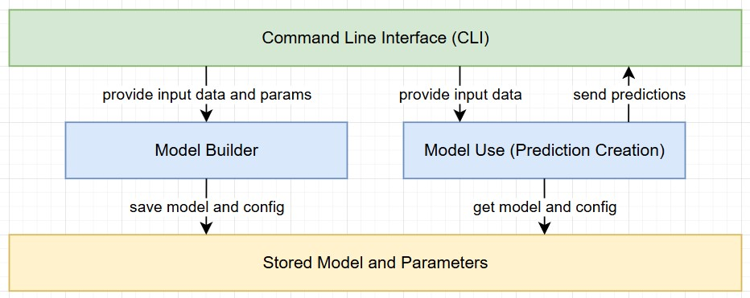

UNDERSTANDING ARTIFICIAL INTELLIGENCE
Random Forest with Python
This section focuses on the implementation of a RandomForest algorithm with Python using the scikit library. The solution has been built with a focus on reusability. The goal was to separate the process into two steps while also saving relevant parameters and information for reproducability.
1 - Data Import, Validation, and Model Creation
The first Python script focuses on importing data from a CSV file. It prompts the user for the file location, class information, and algorithm parameters, while also performing basic data validation. The script concludes with the creation of the model (including validation) and the storage of all necessary artifacts.
- Prompt the user for the source file location and offer a default value.
- Validate the CSV file by checking its existence, ensuring it’s not empty, verifying it has at least two rows, and confirming not all entries are empty.
- Prompt the user to specify which column represents the class, and provide a default option.
- Remove all entries with an empty class value and ensure there is still sufficient data remaining.
- Encode all labels and create a class mapping, allowing the numerical values to be translated back to their readable classes when available.
- Prompt the user for the relevant algorithm parameters, providing default values for each.
- Split the data into training and validation sets.
- Run the machine learning algorithm using the specified data splits and parameters.
- Validate the run by providing an accuracy score, label mapping, and a classification report.
- Store the model, encoders, class label mapping, and parameters in separate files.
import pandas as pd
from sklearn.model_selection import train_test_split
from sklearn.ensemble import RandomForestClassifier
from sklearn.metrics import accuracy_score, classification_report
from sklearn.preprocessing import LabelEncoder
import joblib
import sys
#initialize variables
default_csv_file = "dataTraining/learnAndTrain.csv"
default_class_column = "class"
random_state_default = 1234
min_samples_leaf_default = 1
min_samples_split_default = 2
n_estimators_default = 100
test_size_default = 0.3
#get CSV file name (with default option)
csv_file = input(f"Enter name of CSV data source (default: {default_csv_file}): ").strip()
csv_file = csv_file if csv_file else default_csv_file
try:
data = pd.read_csv(csv_file)
except FileNotFoundError:
print("\nError: File not found. Please check the file name and path.")
#exit with sys error - this is part of the sys library
sys.exit(1)
#validate csv if empty print error
if data.empty:
print("\nError: The provided CSV file is empty. Please provide a valid file with data.")
sys.exit(1)
#validate csv if not at least 2 columns print error
if len(data.columns) < 2:
print("\nError: The CSV file must contain at least two columns (features and class column).")
sys.exit(1)
#validate csv if all null or invalid data print error
if data.isnull().all().all():
print("\nError: The CSV file contains only null or invalid data. Please provide a valid file.")
sys.exit(1)
#get class input from user
class_column = input(f"\nPlease provide the name of the column containing the class (default: {default_class_column}): ").strip()
class_column = class_column if class_column else default_class_column
#drop all rows where the class is missing
if data[class_column].isnull().any():
data = data.dropna(subset=[class_column])
print(f"\nWarning: Missing values detected in the '{class_column}' column. Rows with missing values have been dropped.")
#check if data still contain entries after dropping rows
if data.empty:
print("\nError: All rows have been dropped due to missing values in the class column. Please provide a valid file.")
sys.exit(1)
label_encoders = {}
class_label_mapping = {}
for column in data.columns:
if data[column].dtype == 'object':
le = LabelEncoder()
data[column] = le.fit_transform(data[column])
label_encoders[column] = le
if column == class_column:
#this part stores the class label if the column is called class in the file
class_label_mapping = dict(zip(le.classes_, le.transform(le.classes_)))
X = data.drop(class_column, axis=1)
y = data[class_column]
#ask user for model parameters
print("\nProvide Random Forest parameters. Press Enter to use the default value:")
n_estimators = input(f"Number of trees (default={n_estimators_default}): ").strip()
max_depth = input(f"Maximum depth of the tree (default=None): ").strip()
min_samples_split = input(f"Minimum samples required to split an internal node (default={min_samples_split_default}): ").strip()
min_samples_leaf = input(f"Minimum samples required to be at a leaf node (default={min_samples_leaf_default}): ").strip()
random_state = input(f"Provide a random state seed (default={random_state_default}): ").strip()
random_state = int(random_state) if random_state else random_state_default
test_size = input(f"Provide test size must be a float in the range 0.0 - 1.0 (default={test_size_default}): ").strip()
test_size = float(test_size) if test_size else test_size_default
#convert parameters to appropriate types or use default values
params = {
# Number of trees in the forest. Increasing this can improve accuracy but also increases training time.
"n_estimators": int(n_estimators) if n_estimators else n_estimators_default,
# Maximum depth of each tree. Controls overfitting; deeper trees capture more complexity but may overfit.
"max_depth": int(max_depth) if max_depth else None,
# Minimum number of samples required to split an internal node. Larger values prevent overfitting.
"min_samples_split": int(min_samples_split) if min_samples_split else min_samples_split_default,
# Minimum number of samples required to be at a leaf node. Larger values create more general trees.
"min_samples_leaf": int(min_samples_leaf) if min_samples_leaf else min_samples_leaf_default,
# Random seed used for reproducibility. Ensures consistent results across runs.
"random_state": random_state
}
#split data for model training and validation
X_train, X_test, y_train, y_test = train_test_split(X, y, test_size=test_size, random_state=random_state)
#train the randomForestClassifier with parameters from user
rf_model = RandomForestClassifier(**params)
rf_model.fit(X_train, y_train)
#check the model against the test data in X_test
y_pred = rf_model.predict(X_test)
#get the accuracy score by comparing the y_pred which is the prediction to the labels of the test data y_test
accuracy = accuracy_score(y_test, y_pred)
print(f"Random Forest Accuracy: {accuracy}")
if class_label_mapping:
print("\nClass Label Mapping:")
print(pd.DataFrame(list(class_label_mapping.items()), columns=["Original Label", "Assigned Number"]))
#create model classification overview
print("\nClassification Report:\n", classification_report(y_test, y_pred))
#store the model, label encoder and class mapping
joblib.dump(rf_model, 'model/rf_trained_model.pkl')
joblib.dump(label_encoders, 'model/rf_label_encoders.pkl')
joblib.dump(class_label_mapping, 'model/rf_class_labels.pkl')
joblib.dump(params, 'model/rf_parameters.pkl')
#confirm completion of process
print("Model, encoders, class label mapping and parameters have been saved.")
2 - Model Prediction with New Data
In the second phase, the script operationalizes the predictive capabilities of the trained model on a new dataset. By adhering to the same preprocessing standards and encoding strategies established in the initial phase, it ensures methodological consistency and reliable inference.
- Load the saved .pkl files containing the trained model, label encoders, and class mappings from the first script.
- Apply similar validation checks and preprocessing steps as in the training phase, encoding all categorical data as necessary.
- Ensure that the new data’s columns match the order and structure of the original training set.
- Impute any missing values by filling them with 0, maintaining consistent data quality.
- Remove any extraneous columns that were not part of the training dataset.
- Pass the processed data through the model to generate predictions.
- Use the stored class mapping to convert numeric predictions back into human-readable labels.
- Output the predictions, presenting both numeric and readable labels for clear interpretation.
import pandas as pd
from sklearn.preprocessing import LabelEncoder
import joblib
import sys
#initialize variables (path to csv file)
default_csv_file = "data/dataInput.csv"
def predict_with_new_data(dataInput):
#load label encoder, model and class label mapping
loaded_model = joblib.load('model/rf_trained_model.pkl')
loaded_label_encoders = joblib.load('model/rf_label_encoders.pkl')
class_label_mapping = joblib.load('model/rf_class_labels.pkl')
#load file with new values
new_data = pd.read_csv(dataInput)
#encode categorial columns
for column in new_data.columns:
if column in loaded_label_encoders: #check if column was encoded in testing run of model
encoder = loaded_label_encoders[column]
try:
new_data[column] = encoder.transform(new_data[column])
except ValueError:
print(f"Warning: Unseen categories found in column '{column}'. Setting them to NaN.")
new_data[column] = new_data[column].apply(lambda x: encoder.transform([x])[0] if x in encoder.classes_ else None)
#fill NaN values introduced by unseen categories
new_data = new_data.fillna(0)
#align columns with the training data
expected_columns = loaded_model.feature_names_in_ #feature names from model training
missing_columns = set(expected_columns) - set(new_data.columns)
extra_columns = set(new_data.columns) - set(expected_columns)
#add 0 to all missing entries
for col in missing_columns:
new_data[col] = 0
#remove extra columns
new_data = new_data[expected_columns]
#make predictions
predictions = loaded_model.predict(new_data)
#get the class labels remapped to the results
mapped_predictions = [list(class_label_mapping.keys())[list(class_label_mapping.values()).index(pred)] for pred in predictions] if class_label_mapping else predictions
#return predictions
return predictions, mapped_predictions
#get CSV file name by user with default option
csv_file = input(f"Enter name of CSV data source (default: {default_csv_file}): ").strip()
csv_file = csv_file if csv_file else default_csv_file
#load file and include error handling
try:
data = pd.read_csv(csv_file)
except FileNotFoundError:
print("\nError: File not found. Please check the file name and path.")
#exit with sys error - this is part of the sys library
sys.exit(1)
#validate csv if empty print error
if data.empty:
print("\nError: The provided CSV file is empty. Please provide a valid file with data.")
sys.exit(1)
#validate csv if not at least 2 columns print error
if len(data.columns) < 2:
print("\nError: The CSV file must contain at least two columns (features and class column).")
sys.exit(1)
#validate csv if all null or invalid data print error
if data.isnull().all().all():
print("\nError: The CSV file contains only null or invalid data. Please provide a valid file.")
sys.exit(1)
#prediction on new csv file
numeric_predictions, mapped_predictions = predict_with_new_data(csv_file)
#generate prediction output
print("\nPredictions:")
for num, label in zip(numeric_predictions, mapped_predictions):
print(f" Numeric: {num} -> Label: {label}")
Conclusion
Adopting a two-phase methodology, combined with the removal of hardcoded parameters (class names, file paths, labels, and algorithm settings), significantly enhances the adaptability of the RandomForest algorithm to diverse datasets. This design choice facilitates the construction of new models with minimal additional effort. Furthermore, the practice of storing all essential components in .pkl files promotes reproducibility and eases the troubleshooting process, thereby supporting both effective model maintenance and scalability.